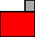
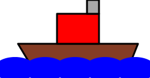

about
#lang racket
okay hi. yeah okay, let’s make a bout
(require 2htdp/image lang/posn) (define (filled f fill . args) (define pen (make-pen 'black 3 'solid 'round 'round)) (overlay (apply f `(,@args outline ,pen)) (apply f `(,@args solid ,fill))))
should help us make shapes with lines around them. let’s test:
> (filled circle 'red 20)
(define bottom (filled polygon 'brown (list (make-posn 0 0) (make-posn 200 0) (make-posn 180 50) (make-posn 30 50))))
> bottom
(define top (above/align 'right (filled rectangle 'darkgray 20 23) (filled rectangle 'red 70 50)))
> top 
so we have top part of boat and bottom part of boat and we will make boat by putting top on top of bottom
(define boat (above top bottom))
now we just need the sea. the sea is made of blue
> (ellipse 70 40 'solid 'blue)
(define blue (ellipse 70 40 'solid 'blue)) (define sea (foldr (λ (_ img) (overlay/xy blue 50 0 img)) blue '(1 2 3 4)))
> (crop 10 0 250 130 (underlay/xy boat -40 95 sea)) 